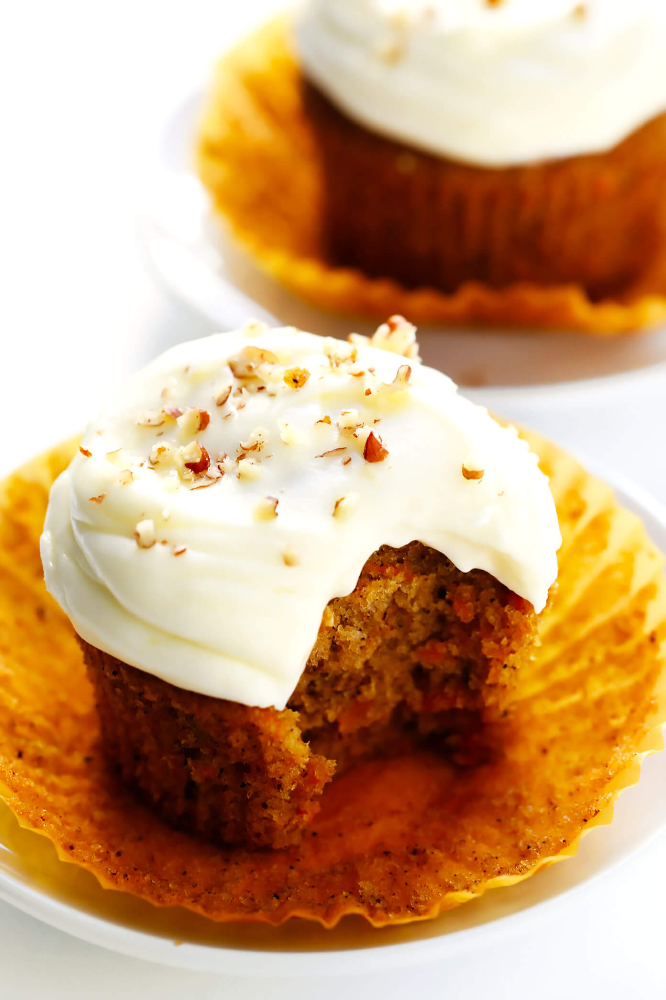

Carrot Cake

Description
This Carrot Cake Cupcakes recipe is unbelievably moist and perfectly spiced and loaded up with fresh carrots, and topped with the most heavenly cream cheese frosting. See notes above for possible ingredient variations.
Ingredients
carrot cake cupcake ingredients
- 3/4 cup avocado oil (or any mild-flavored oil)
- 1/2 cup granulated sugar
- 1/2 cup packed brown sugar
- 3 eggs
- 2 teaspoons vanilla extract
- 1 2/3 cups flour
- 2 teaspoons ground cinnamon
- 1 teaspoon baking soda
- 1 teaspoon salt
- 1/2 teaspoon baking powder
- 1/4 teaspoon ground nutmeg
- 1/4 teaspoon ground cloves
- 8 ounces finely-grated* fresh carrots
cream cheese frosting ingredients
- 1 (8-ounce) package cream cheese, room temperature
- 1/2 cup butter
- 1 teaspoon vanilla extract
- 3–4 cups powdered sugar
Steps
- Preheat oven to 350°F. Line a 12-cup** cupcake pan with baking liners.
- In a large mixing bowl, whisk together oil, granulated sugar, and brown sugar until combined and smooth. Add in the eggs and vanilla, and whisk until smooth.
- In a separate bowl, whisk together the remaining dry ingredients (flour, cinnamon, baking soda, salt, baking powder, nutmeg and cloves) until combined. Gradually add the dry ingredient mixture into the egg mixture, and stir until smooth. Fold in the grated carrots and stir until combined. If you would like to add nuts and/or raisins, stir them in at this time as well.
- Pour the batter into the cupcake liners so that they are 3/4 full. Then bake for 18-20 minutes, or until a toothpick inserted in the middle of the cupcakes comes out clean. Transfer the baking pan to a wire cooling rack and let the cupcakes cool until they reach room temperature.
- Meanwhile, combine the cream cheese, butter and vanilla in a medium mixing bowl and stir until combined and smooth. (You can either do this with a spatula, or with a hand or stand mixer.) Gradually stir in the powdered sugar and mix until it is completely combined. Feel free to add more/less powdered sugar to achieve your desired consistency.
- Frost the cupcakes with the cream cheese frosting. Serve immediately, or refrigerate in a sealed container for up to 4 days.